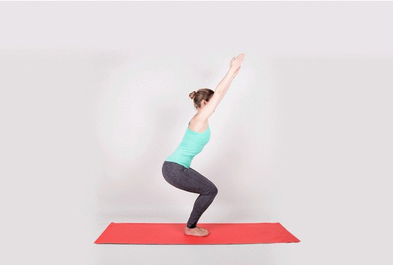

Five Different Yoga Poses
Mountain Pose
Stand with your feet together or hip-width apart. Ground down through the four corners of your feet. Roll your shoulders away from your ears, draw your shoulder blades down your back, and lift the crown of your head.
Read More

Chair Pose
Start in Mountain Pose. As you inhale, raise your arms, spread your fingers, & reach up through your fingertips. As you exhale, sit back and down as if sitting into a chair.Shift your weight toward the heels & lengthen spine.
Read More
Downward Pose
From all fours, walk your hands 6 inches in front of you. Tuck your toes and lift your hips up and back to lengthen your spine. If your hamstrings are tight, keep your knees bent in order to bring your weight back into the legs.
Read More

Triangle Pose
Stand with feet wide,3 to 4 feet apart. Shift your right heel out so your toes are pointing slightly inward. Turn your left foot out 90 degrees. Line up your left heel with the arch of your right foot.Keeping both legs straight, ground feet.
Read More

Bridge Pose
Lie faceup with knees bent, feet flat on the floor, and arms at your sides with palms facedown. Keep your feet parallel and hip-width apart, heels stacked under knees.On an inhale, activate through the legs and the glutes.
Read More